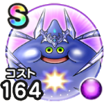

コメットスライム
メゾン・ド・セラフィイベントこころ最大コスト+4じゅもんダメージ+7%ドルマ属性じゅもんダメージ+12%【大魔道士】攻撃呪文の魔人のやまびこ発動率+2%【天地雷鳴士】カカロンの加護［反復］の発動率+2%じゅもん耐性+7%休み耐性+5% / 9.0点
くわしい特徴
【ランク特殊効果】 こころ最大コスト+4じゅもんダメージ+7%ドルマ属性じゅもんダメージ+12%【大魔道士】攻撃呪文の魔人のやまびこ発動率+2%【天地雷鳴士】カカロンの加護［反復］の発動率+2%じゅもん耐性+7%休み耐性+5%